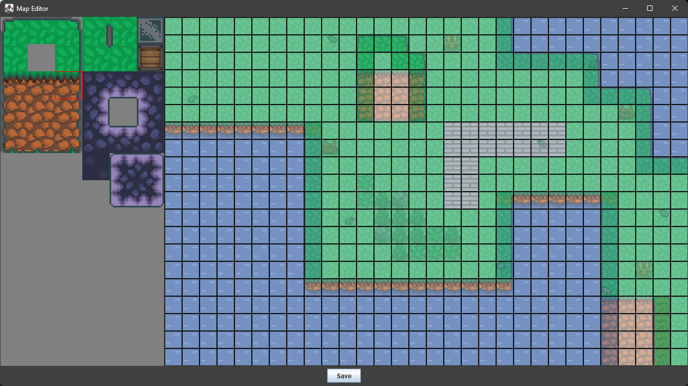

A hobby of developing games has led to the creation of a Map Maker designed to assist in the game development process. This tool enables users to build multilayered maps with ease, offering input options for custom parameters such as sprite size, map size, and the ability to utilize custom spritesheets. The map is saved in the form of a text file, which contains a 2D array for each layer. Additionally, it supports loading previously created maps, allowing for easy editing and quick fixes to designs. The image below showcases the user interface with a map loaded from the RPG game.
